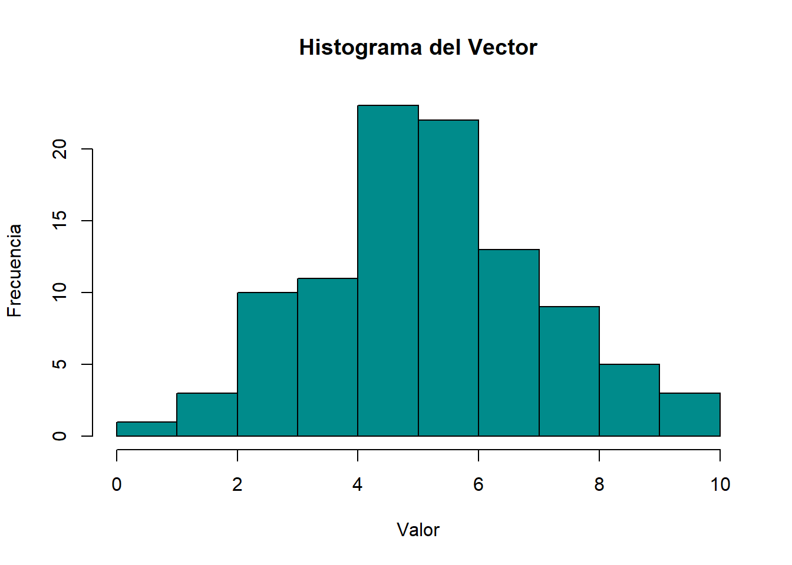
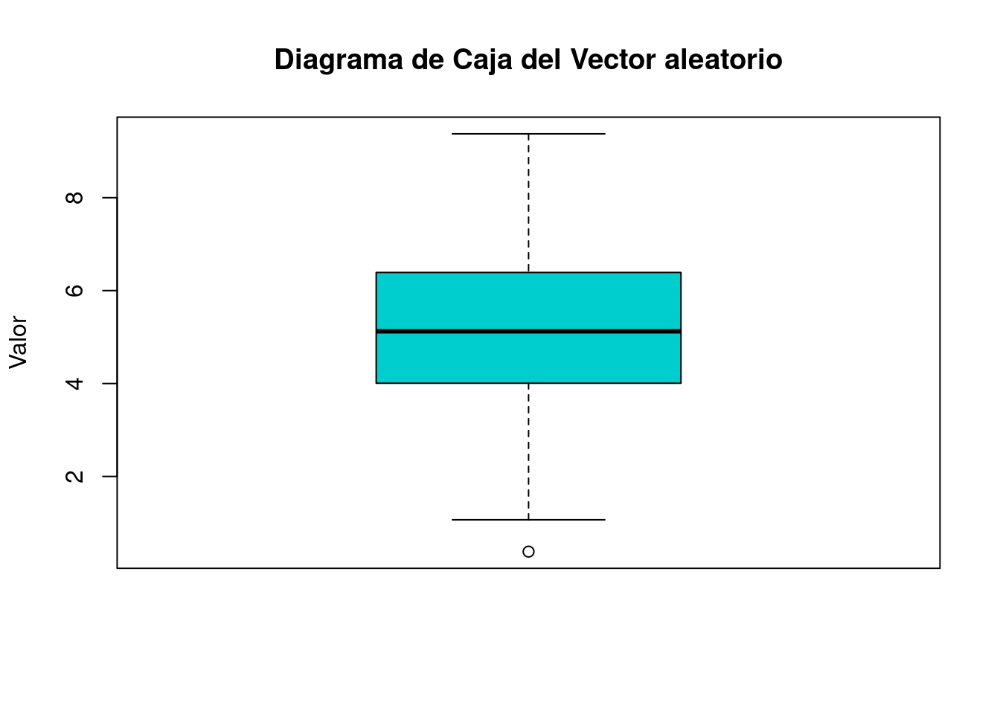
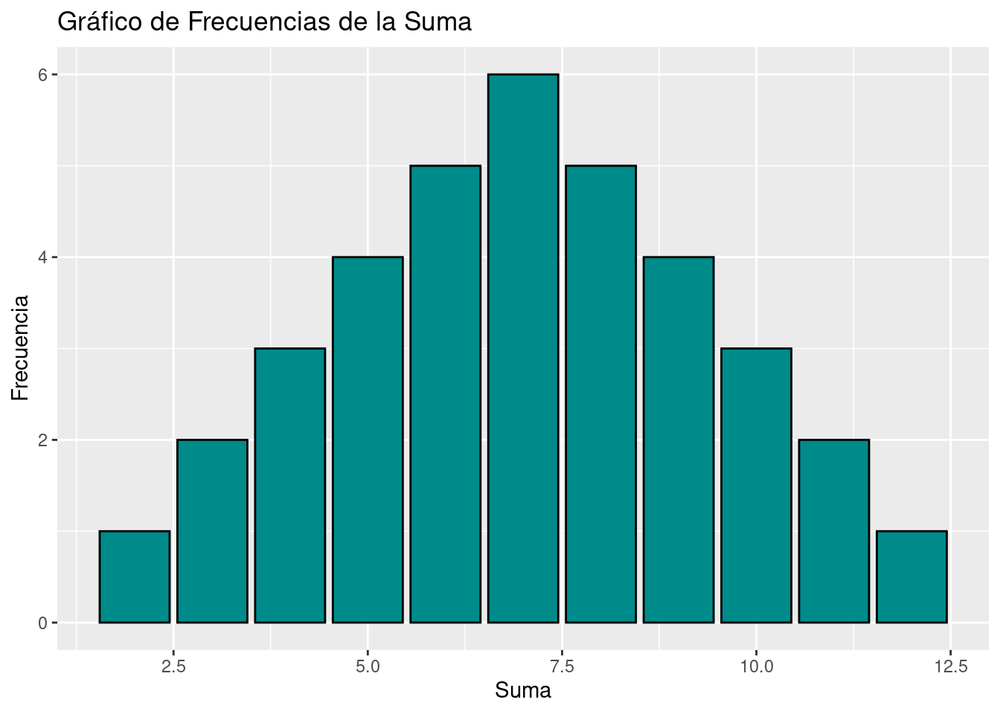
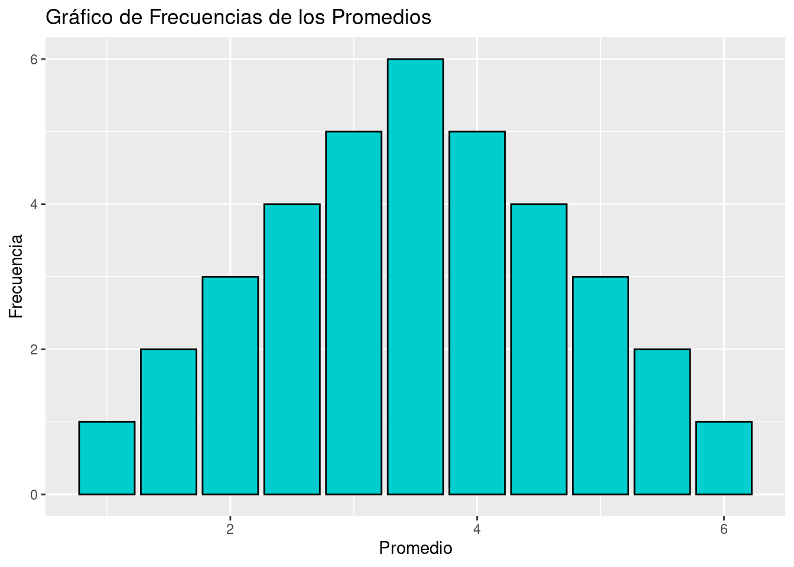
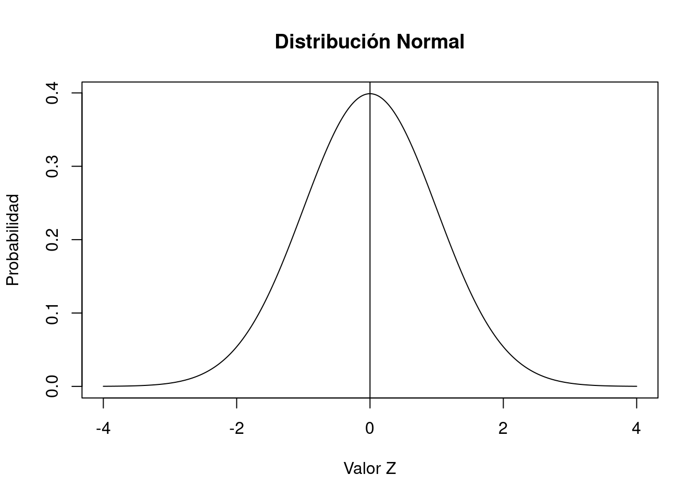

library(pacman)
pacman::p_load(tidyverse, # para sintaxis
ggplot2, # para gráficos
car, # para recodificar
psych, # para analizar datos
sjmisc, # para analizar datos
srvyr, # para estimación de IC y ponderadores
Publish) # para IC)
options(scipen = 999) # para desactivar notacion cientifica
rm(list = ls()) # para limpar el entonrno de trabajoDistribución Normal e Intervalos de Confianza
Completar hasta as 11:59 PM del martes, 27 de agosto de 2024
Objetivo de la práctica
El objetivo de esta guía práctica es introducirnos en la inferencia estadística, revisando los conceptos y aplicaciones de la curva normal y las probabilidades bajo esta con puntajes Z, además del cálculo de intervalos de confianza.
En detalle, aprenderemos y recordaremos:
- Los conceptos de promedio y desviación estándar
- Qué es la probabilidad y su aplicación para estadística
- Qué es la distribución normal
- Cómo calcular e interpretar intervalos de confianza
Librerías
Cargaremos algunas librerías que serán necesarias en las diferentes partes de esta guía práctica:
1. Promedio y desviación estándar
El promedio y la desviación estándar son conceptos fundamentales para continuar hacia la estadística inferencial. Repasemos estos conceptos mediante un ejercicio con datos simulados.
Primero, generaremos un vector de 100 valores aleatorios con \(\mu = 5\) y \(\sigma = 2\), y lo visualizaremos con la función print.
set.seed(123) # Fijar la semilla para reproducibilidad
vector <- rnorm(100, mean = 5, sd = 2)
print(vector) # Ver el vector generado [1] 3.8790487 4.5396450 8.1174166 5.1410168 5.2585755 8.4301300 5.9218324
[8] 2.4698775 3.6262943 4.1086761 7.4481636 5.7196277 5.8015429 5.2213654
[15] 3.8883177 8.5738263 5.9957010 1.0667657 6.4027118 4.0544172 2.8643526
[22] 4.5640502 2.9479911 3.5422175 3.7499215 1.6266134 6.6755741 5.3067462
[29] 2.7237261 7.5076298 5.8529284 4.4098570 6.7902513 6.7562670 6.6431622
[36] 6.3772805 6.1078353 4.8761766 4.3880747 4.2390580 3.6105860 4.5841654
[43] 2.4692073 9.3379119 7.4159240 2.7537828 4.1942303 4.0666893 6.5599302
[50] 4.8332619 5.5066370 4.9429065 4.9142591 7.7372046 4.5484580 8.0329412
[57] 1.9024944 6.1692275 5.2477085 5.4318831 5.7592790 3.9953531 4.3335852
[64] 2.9628492 2.8564175 5.6070573 5.8964196 5.1060085 6.8445349 9.1001694
[71] 4.0179377 0.3816622 7.0114770 3.5815985 3.6239828 7.0511427 4.4304540
[78] 2.5585646 5.3626070 4.7222173 5.0115284 5.7705608 4.2586799 6.2887531
[85] 4.5590269 5.6635639 7.1936780 5.8703630 4.3481368 7.2976152 6.9870077
[92] 6.0967939 5.4774635 3.7441878 7.7213049 3.7994808 9.3746660 8.0652213
[99] 4.5285993 2.9471582¿Cómo se vería la distribución de este vector aleatorio? Primero realizaremos un gráfico de histograma con la función hist y luego uno de cajas con la función boxplot.
hist(vector,main="Histograma del Vector",xlab="Valor",ylab="Frecuencia",col="cyan4",border="black")
boxplot(vector,main="Diagrama de Caja del Vector aleatorio",ylab="Valor",col="cyan3")
Ahora, calculamos la media y la desviación estándar del vector:
media <- mean(vector)
desv_estandar <- sd(vector)
cat("Media:", media, "\n")Media: 5.180812 cat("Desviación Estándar:", desv_estandar, "\n")Desviación Estándar: 1.825632 La media, que es una medida de tendencia central, nos presenta un valor que resume nuestros datos aproximándonos al “centro” de la distribución. Y la desviación estándar es una medida de dispersión que nos presenta un valor que resume nuestros datos en cuanto a qué tan “dispersos” se encuentran.
En el caso de nuestro vector, creado con datos aleatorios, la media \(\bar{x} = 5,18\) nos muestra que el promedio de los datos se encuentra en torno a 5,2.
Ahora, recordemos la fórmula de la desviación estándar:
\[ s = \sqrt{\frac{\sum_{i=1}^{n} (x_i-\bar{x})^2 }{N-1}} \]
Donde:
\(N\) es el tamaño del vector,
\(x_i\) son los valores individuales del vector,
\(\bar{x}\) es la media del vector.
La desviación estándar corresponde, entonces, a un promedio de lo que cada valor se aleja del promedio del vector. En el caso de nuestro vector, \(s = 1,82\) nos muestra que en promedio los datos se alejan 1,82 puntos del promedio.
La desviación estándar es un concepto clave para Inferencia Estadística.
Nota
Antes de seguir, recordemos que…
Llamamos inferencia estadística al ejercicio de extrapolar determinadas estimaciones (estadísticos) de una muestra a una población más grande (parámetros). En concreto, es el proceso de realizar conclusiones o predicciones sobre una población a partir de una muestra o subconjunto de esa población.

La probabilidad de error indica en qué medida nos estamos equivocando (o estamos dispuestos a estar equivocados) en tratar de extrapolar una estimación muestral a la población.
2. Probabilidad
Para pensar en la idea de probabilidad realicemos la tarea propuesta en la Clase de Inferencia 1. En esta tarea se buscaba generar los resultados posibles al lanzar dos dados. Primero se busca sumar los resultados entregados por ambos dados, y luego promediar los resultados:
# Generar todas las combinaciones posibles de dos dados
dado1 <- rep(1:6, each = 6)
dado2 <- rep(1:6, times = 6)
# Calcular la suma y el promedio para cada combinación
suma <- dado1 + dado2
promedio <- suma / 2
# Crear un data frame con los resultados
resultados <- data.frame(dado1, dado2, suma, promedio)
# Mostrar el data frame
print(resultados) dado1 dado2 suma promedio
1 1 1 2 1.0
2 1 2 3 1.5
3 1 3 4 2.0
4 1 4 5 2.5
5 1 5 6 3.0
6 1 6 7 3.5
7 2 1 3 1.5
8 2 2 4 2.0
9 2 3 5 2.5
10 2 4 6 3.0
11 2 5 7 3.5
12 2 6 8 4.0
13 3 1 4 2.0
14 3 2 5 2.5
15 3 3 6 3.0
16 3 4 7 3.5
17 3 5 8 4.0
18 3 6 9 4.5
19 4 1 5 2.5
20 4 2 6 3.0
21 4 3 7 3.5
22 4 4 8 4.0
23 4 5 9 4.5
24 4 6 10 5.0
25 5 1 6 3.0
26 5 2 7 3.5
27 5 3 8 4.0
28 5 4 9 4.5
29 5 5 10 5.0
30 5 6 11 5.5
31 6 1 7 3.5
32 6 2 8 4.0
33 6 3 9 4.5
34 6 4 10 5.0
35 6 5 11 5.5
36 6 6 12 6.0Esto se puede observar de manera gráfica de la siguiente forma:
# Gráfico de frecuencias para la suma
ggplot(resultados, aes(x = suma)) +
geom_bar(fill = "cyan4", color = "black") +
labs(title = "Gráfico de Frecuencias de la Suma", x = "Suma", y = "Frecuencia")
# Gráfico de frecuencias para los promedios
ggplot(resultados, aes(x = promedio)) +
geom_bar(fill = "cyan3", color = "black") +
labs(title = "Gráfico de Frecuencias de los Promedios", x = "Promedio", y = "Frecuencia")
¿Y cuál es la probabilidad de ocurrencia de cada resultaado?
# Calcular las frecuencias de cada promedio
tabla_frecuencias <- table(resultados$promedio)
# Calcular la probabilidad de ocurrencia de cada promedio
probabilidades <- tabla_frecuencias / sum(tabla_frecuencias)
# Crear la tabla final con valores de promedios y sus probabilidades
tabla_final <- data.frame(Promedio = as.numeric(names(probabilidades)),
Probabilidad = as.numeric(probabilidades))
# Mostrar la tabla final
print(tabla_final) Promedio Probabilidad
1 1.0 0.02777778
2 1.5 0.05555556
3 2.0 0.08333333
4 2.5 0.11111111
5 3.0 0.13888889
6 3.5 0.16666667
7 4.0 0.13888889
8 4.5 0.11111111
9 5.0 0.08333333
10 5.5 0.05555556
11 6.0 0.02777778La ocurrencia de algunos eventos (como la suma o promedio de dos dados) tienen una probabilidad determinada, lo que genera una distribución teórica de probabilidad.
Si repito un evento aleatorio (ej: sacar muestras repetidas de dos dados y promediarlos) obtengo la distribución empírica de probabilidad (de frecuencias de los eventos).
De acuerdo con la ley de los grandes números, el promedio empírico convergerá al teórico a medida que aumenta el número de repeticiones. Eso podemos observarlo:
3. Distribución Normal
3.1. Curvas de distribución
Por distribución nos referimos al conjunto de todos los valores posibles de una variable y las frecuencias (o probabilidades) con las que se producen.
Existen distribuciones empíricas y distribuciones teóricas, en donde:
- las primeras reflejan la distribución de los valores que asume la variable en un grupo concreto a partir de una observación.
- las segundas son una función matématica que expresan la distribución de un conjunto de números mediante su probabilidad de ocurencia.
Estas últimas son también llamadas curvas de distribución.
3.2. Distribución Normal
Es una distribución teórica que corresponde a una curva que representa la distribución de los casos de la población en torno al promedio y con una varianza conocida.
- Simétricas y con un solo punto de elevación
- La pendiente es más fuerte cerca del centro, y se suaviza hacia los extremos
- Coinciden al centro el promedio, la mediana y la moda
- La desviación estandar expresa su dispersión.
- Establece áreas o proporciones bajo la curva en base a desviaciones estándar del promedio.
3.3. Distribución Normal Estándar
La distribución normal estándar es una distribución normal con una media de 0 y una desviación estándar de 1.

3.4. Puntaje Z y estandarización de variables
Al estandarizar las variables (como en la Curva Normal Estándar) lo que hacemos es expresar el valor de una distribución en términos de desviaciones estándar basados en la distribución normal. Esto nos permite comparar distribuciones distintas.
Al valor estandarizado lo llamamos puntaje Z, y corresponde a la cantidad de desviaciones estándar que nos alejamos del promedio (para cada variable con la que trabajemos).
3.5. Cálculo de probabilidades con puntaje z
Los valores estandarizados o puntajes Z además nos permiten conocer probabilidades.
Con R es posible generar un conjunto de datos simulados con una distribución normal.
x_values <- seq(-4,4,length=1000)
y_values <- dnorm(x_values)
plot(x_values,y_values,type="l",xlab="Valor Z",ylab="Probabilidad",main="Distribución Normal")
Podemos preguntar qué parte de la curva cae por debajo de un valor particular. Por ejemplo, preguntaremos sobre el valor 0 antes de ejecutar el código. Piense ¿cuál debería ser la respuesta?
pnorm(q = 0)[1] 0.5Por tanto, la probabilidad (en una curva normal estándar) de obtener un valor igual o menor a 0 es de 0.5, es decir, del 50%, pero ¿por qué?
Porque como la distribución normal estándar es simétrica al rededor de cero, la probabilidad de que sea menor o igual a cero es 0.5, es decir, el 50% de la distribución está por debajo de cero y el otro 50% está por encima de cero.
Eso lo podemos ver en el gráfico:
plot(x_values,y_values,type="l",xlab="Valor Z",ylab="Probabilidad",main="Distribución Normal")
abline(v=0)
Ahora probemos los valores Z de +1,96 y -1,96.
Sabemos que estos valores aproximados marcan el 2,5% superior e inferior de la distribución normal estándar. Esto corresponde a un alfa típico \(\alpha = 0,05\) para una prueba de hipótesis de dos colas.
pnorm(q = 1.96, lower.tail=TRUE)[1] 0.9750021La respuesta nos dice lo que ya sabemos: el 97,5% de la distribución normal ocurre por debajo del valor z de 1,96.
Podemos agregar una línea al gráfico para mostrar dónde se usaría abline.
El 97,5% de la distribución queda por debajo de esta línea.
plot(x_values, y_values, type="l", lty=1, xlab="Z value", ylab="Probability", main="Normal Distribution") +
abline(v = 1.96)
integer(0)4. Intervalos de confianza
Un intervalo de confianza es un rango dentro del cual es probable que se encuentre un parámetro poblacional con un nivel de confianza específico. Además, proporciona información sobre la precisión de nuestras estimaciones.
Como vimos en la sesión 4 el promedio de la muestra \(\bar{x}\) se distruye normal, con un error estándar \(SE\), lo que nos permite estimar probabilidades basándonos en la curva normal.
Por ejemplo, si nos desviamos \(\pm1.96SE\) desde la media abarcaremos aproximadamente el 95% de los valores probables.

Nota
Nivel de confianza: Corresponde a la probabilidad de que la muestra elegida produzca un intervalo que incluya el parámetro que se está estimando (\(1-\alpha\)).
Nivel de significacncia: Corresponde a la probabilidad de que el intervalo calculado a partir de la muestra no comprenda el parámetro de la población (\(\alpha\)).
4.1. Cálculo de intervalos de confianza
En el caso de nuestro vector aleatorio, un intervalo de confianza para la media se puede calcular de la siguiente manera:
# Calcular un intervalo de confianza para la media
intervalo_confianza <- t.test(vector)$conf.int # Intervalo de confianza del 95% para la media
intervalo_confianza[1] 4.818567 5.543057
attr(,"conf.level")
[1] 0.95También podemos calcular intervalos de confianza para casos reales. Carguemos la base de datos que utilizaremos, que corresponde a un subset de la Encuesta Suplementaria de ingresos ESI para ocupados:
load(url("https://github.com/cursos-metodos-facso/datos-ejemplos/raw/main/esi-2021-ocupados.rdata"))
Nota
Recordemos que podemos contar con bases de datos que tengan factor de expansión (ponderador) o no. Esta distinción se presenta cuando trabajamos con muestras simples o complejas. Al trabajar con muestras complejas debemos identificar cuál es la variable del ponderador e incorporarla en nuestro cálculo.
En esta guía practicaa trabajaremos sin factores de expansión o ponderadores.
IC para Medias
Calculemos un intervalo de confianza para la media de ingresos de personas ocupadas:
psych::describe(esi$ing_t_p) vars n mean sd median trimmed mad min max
X1 1 37124 586360.4 697362.9 405347.7 474473.1 255411.6 0 38206253
range skew kurtosis se
X1 38206253 12 402.32 3619.36Publish::ci.mean(esi$ing_t_p, alpha = 0.05) mean CI-95%
586360.41 [579266.37;593454.45]Contamos con una media de ingresos de $586.360 como estimación puntual. Pero también podemos decir que con un 95% de confianza el parámetro poblacional se encontrará entre $579.266 y $593.454.
Resumen
Hoy pudimos aprender y recordar:
- Los conceptos de promedio y dispersión
- Qué es la probabilidad y su aplicación para estadística
- Qué es la distribución normal
- Cómo calcular e interpretar intervalos de confianza